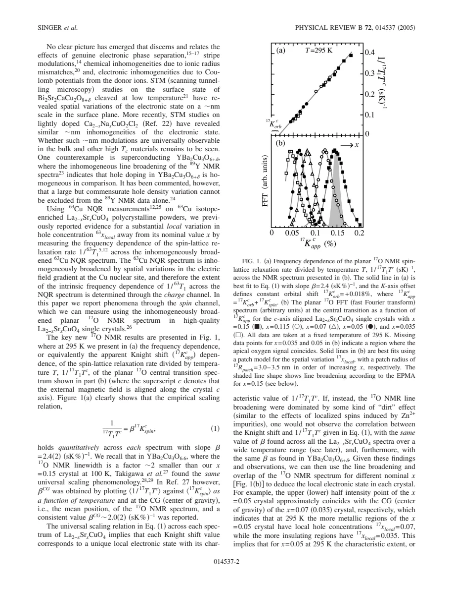
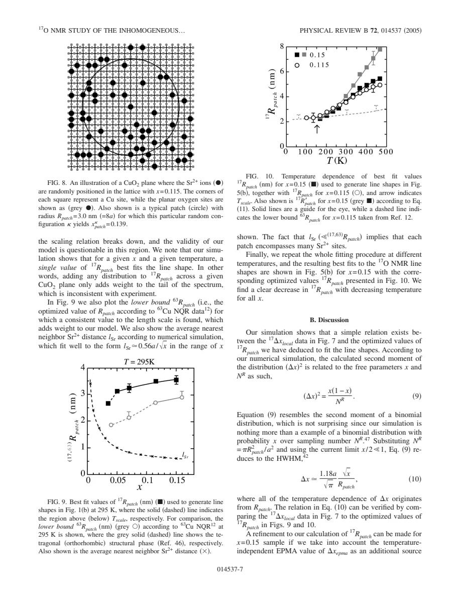

experiment · Singer · supplied source 2005
17O NMR study of the inhomogeneous electronic state in La2-xSrxCuO4 crystals
Frequency-resolved oxygen shift and relaxation support nanometer-scale electronic variation under a specified patch model and above its scaling-breakdown temperature.
The question: Can oxygen NMR distinguish electronic inhomogeneity from simple macroscopic chemical variation?
Before you start: the few terms you need
- LSCO: layered La2-xSrxCuO4; nominal x is Sr per formula unit
- Local probe: a distribution can matter even when the bulk average barely changes
See → explain → test
Understand it in four pictures.
Picture 1 / 4
Read the oxygen spin channel
Look for: The planar central transition is broadened primarily by local spin susceptibility.
Swipe across the picture to read every label, or enlarge it below.
- Planar oxygen
- Local spin shifts
Teaching schematic. Quadrupole and orbital offsets are treated separately in the source.
This complements the electric-gradient-sensitive Cu NQR channel.
Picture 2 / 4
Correlate shift with recovery
Look for: Across a line, 1/T1T scales approximately linearly with spin shift.
Swipe across the picture to read every label, or enlarge it below.
- Select shift
- Measure1/T1T
- Check common scaling
Teaching schematic. Source linear scaling is not the quadratic uncorrelated Korringa relation.
The broadened frequencies represent correlated local electronic states.
Picture 3 / 4
Random donors and finite patches
Look for: A finite patch averages over only a limited number of Sr donors.
Swipe across the picture to read every label, or enlarge it below.
- Random donor positions
- Average over finite patch
- Distribution of local holes
Teaching schematic. The source models patch radii around 2–5 nm; a fitted averaging scale is not an imaged boundary.
Smaller averaging areas produce a broader local-hole distribution.
Picture 4 / 4
Stop where the mapping fails
Look for: Below Tscale the common shift-relaxation relation breaks down.
Swipe across the picture to read every label, or enlarge it below.
- Scaling verified
- Patch inference
- Low-T breakdown
Teaching schematic. Possible incommensurate fluctuations or near-undoped regions add response.
Do not extend the inferred local-hole calibration below its tested range.
Predict before revealing
At fixed nominal x, what does increasing the patch averaging radius do in the random-donor model?
Choose an answer, then compare the reasoning.
The variance scales inversely with the number of sites in the patch. More averaging reduces local donor-count fluctuations at the same mean.
Read the answer
Narrows the distribution through averaging The variance scales inversely with the number of sites in the patch. More averaging reduces local donor-count fluctuations at the same mean.
Go deeper Follow the full argument
A spin-sensitive test of inhomogeneity
Singer and colleagues study high-quality LSCO single crystals with nominal x from 0.035 to 0.15 using enriched 17O. The planar oxygen central transition with field along c is chosen to minimize quadrupolar broadening and avoid much of the narrow apical signal. After accounting for a small second-order quadrupole shift and an orbital offset, frequency mainly reflects local uniform spin susceptibility. The spectra of different nominal dopings overlap substantially, with increasing overlap on cooling. This alone suggests distributed environments, but the crucial additional observation is a correlated spin-lattice response across each broadened line, rather than width interpreted without an electronic calibration.
Shift-relaxation scaling supplies a local consistency test
At295 K the measured1/T1T scales approximately linearly with Kspin across crystals and across frequencies, with slope around 2.4(s K %)⁻¹. A comparable relation holds over a restricted temperature range and is also checked at fixed x while changing temperature. It differs from the simplest uncorrelated Korringa relation, which relates the rate to shift squared. The linear relation supports the claim that different frequencies select consistent local electronic responses rather than broadening dominated by unrelated impurity moments. Planar oxygen geometrically filters the commensurate AF wave vector, while Cu strongly weights that region. These different filters make cross-channel comparisons informative without making the probes identical.
Converting spectral width to a hole distribution
The source finds a roughly linear mean spin shift versus nominal x within the applicable interval. It then uses that slope to convert a width in spin shift into a characteristic width in local hole concentration. This defines xlocal =x±Δxlocal, a distribution around the nominal mean. It is not a direct chemical assay of each atomic site. Electron-probe microanalysis gives much smaller, nearly temperature-independent variation over micrometer scales; the larger NMR variation grows on cooling. The contrast argues against explaining the entire width by macroscopic imperfect mixing. Some apical overlap leaves gaps in spectra for lower dopings, and the calibration must not be applied to those missing regions as if they had been observed.
The finite-patch model and its meaning
The model randomly distributes Sr donor ions and averages donated holes over a circular CuO2 patch. Local donor-count fluctuations create a histogram of hole concentrations, mapped to a spin-shift histogram. Fits favor radii around 2 to 5 nm. This radius is an effective scale of electronic averaging under the model, not a real-space image of sharply bounded puddles. The variance approximately follows x(1-x)/NR, where NR is the number of sites in the patch. A larger patch averages more donors and narrows the distribution; decreasing radius on cooling broadens it. The model assumes random donors, approximate sharing within a patch and a common radius, and neglects a small double-donation correction.
Where the inference ends
The scaling breaks below a doping-dependent Tscale, so the paper limits determination of local hole concentration above that threshold. Incommensurate AF fluctuations are not perfectly cancelled by oxygen's form factor and may add low-temperature relaxation; regions close to undoped behavior are another discussed possibility. Thus saturation of a linewidth or rate cannot be blindly converted into a continuing local-hole histogram. Including independent EPMA broadening also changes inferred radii at higher temperature. The authors compare Cu and O estimates semiquantitatively and conclude that charge and spin inhomogeneity are linked. That conclusion does not equate all low-temperature broadening with a static charge-order amplitude or prove simple macroscopic phase separation.
How to compare the evidence
A concrete example at 295 K illustrates how the calibration is used. The broad x = 0.05 spectrum overlaps shifts characteristic of both a more weakly doped and a more strongly doped crystal. The matching frequency-resolved relaxation gives a consistency check that those parts of the spectrum correspond to different local electronic responses. This is stronger than inferring charge variation from a linewidth alone. The random-donor model then asks what averaging area would produce such a distribution, yielding an effective radius rather than directly resolving islands. Repeat the same inference below Tscale and the required shift-relaxation relation fails; the mapping is no longer justified. This makes the paper a lesson in both local inference and knowing when a calibration has ceased to apply.
Translate the mathematics Key equations and symbol meanings
1/(17T1T) = κ 17Kspin
Symbols: κ: empirical linear slope; Kspin: spin Knight shift; 17T1: oxygen recovery time.
Verified only above the source Tscale; not the uncorrelated quadratic Korringa relation.
ΔKspin = (d⟨Kspin⟩/dx) Δxlocal
Symbols: Δ: characteristic spectral/distribution width in the source definition.
Converts a spin width to a local-hole width under the local scaling/calibration assumptions.
Var(xpatch) ≈ x(1-x)/NR ; NR = πRpatch²/a²
Symbols: NR: number of Cu sites sampled; Rpatch: patch radius; a: spacing.
Random donor-count model. The source notes a correction x(1-x/2)/NR if double donation is retained.
Read the evidence A guided look at the original figures

Open the full original page ↗

Open the full original page ↗
What this paper does—and does not—establish
- Complete substantive nine-page supplied source read; references not independently reviewed.
- Local-hole mapping is restricted to the verified scaling interval.
- Donor randomness, averaging geometry and independent broadening are model assumptions.
Explain it back.
Try answering aloud before opening the explanation.
Is xlocal identical everywhere to nominal x?
No. The source infers a distribution under its calibration assumptions.
Can the inferred hole mapping be continued below Tscale?
No. The measured scaling breaks there and additional spin response may enter.
Is Rpatch an imaged island boundary?
No. It is a fitted effective averaging scale in the random-donor model.
Connect the next paper.
Source version, reading coverage and preservation
Complete supplied substantive text read; selected main figure and equation pages rendered and visually checked
Reviewed body pages: 1, 2, 3, 4, 5, 6, 7, 8. References checked as a bibliography but cited works were not independently re-read.
Original file retained byte for byte. SHA-256: 1dba1db5eaa60be0f8c362f71e2238c4f592d1ef0e8330ad46a8c1195e9470b5
Filename: PRB - Singer - O NMR of electronic inhomogeneity in LSCO - 2005.pdf.